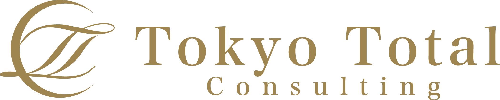
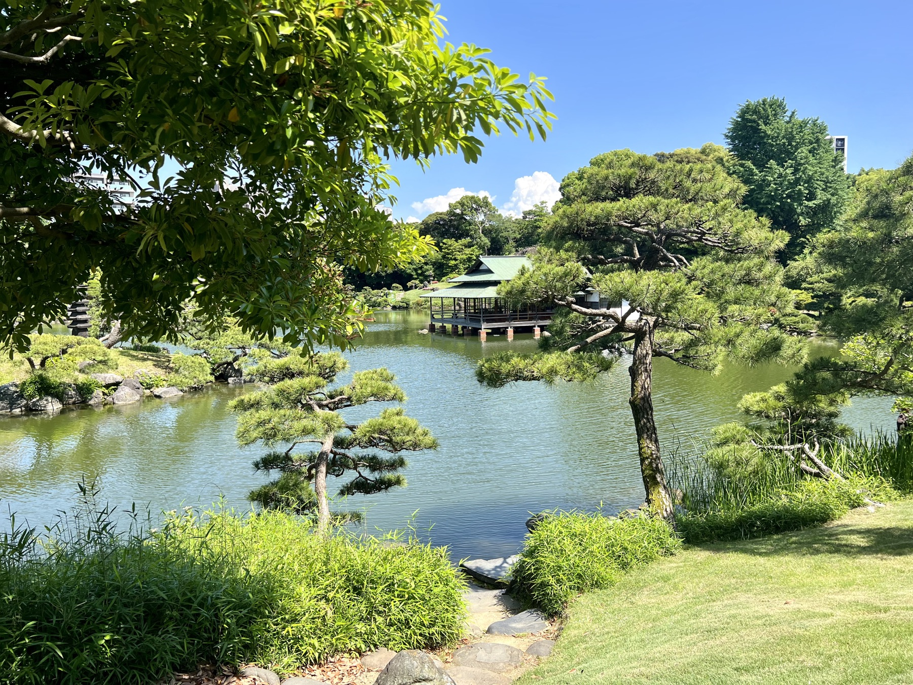
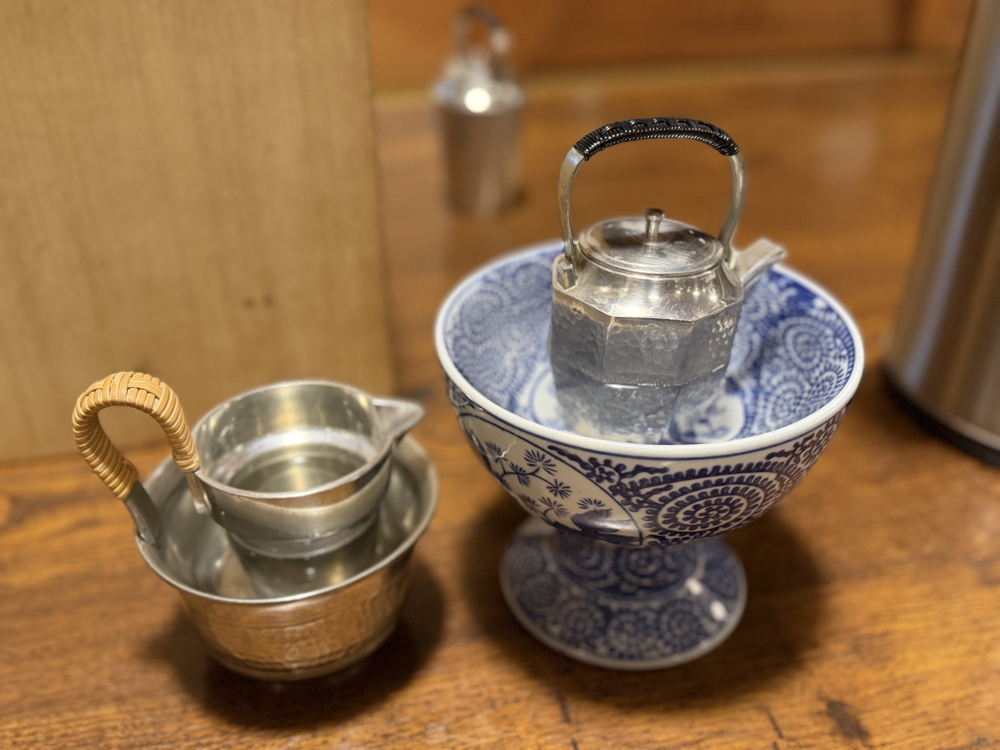

推しを持ち寄る
参加者が、自分の今好きな一本を持ってくる。酒に、その人の視点が入る。

Experience Menu / Shared Favorites
酒を飲む会ではない。 人の「好き」を持ち寄る会である。 一本の推しが、知識と体験と関係性を循環させる。
Concept
この会に参加費はありません。参加条件は一つだけ。今、自分が好きな日本酒を一本持ってくること。
高価な酒である必要はありません。有名な酒である必要もありません。最近見つけた一本。誰かに飲んでほしい一本。思わず語りたくなる一本。それを持ち寄ります。
自分たちが作りたかったのは、お金を払って参加するイベントではなく、それぞれの「推し」を持ち寄る場でした。
この会の主役は、日本酒そのものではなく、人の「好き」です。酒の情報だけではなく、選んだ人の価値観まで共有されていきます。

Place
この会は、清澄庭園の涼亭で開催しています。会社の応接室でも、居酒屋でも、推しを持ち寄る会はできます。実際に、そうしたこともあります。
でも、やはり違います。池を眺めながら飲む酒。歴史ある建物の中で過ごす時間。庭園の暗さ、木の建具、畳の広間。人は思っている以上に、場所の影響を受けます。
遠くへ行かなくても、高級ホテルへ行かなくても、晴れの場を借りることはできます。少し調べてみると、歴史的な空間は個人でも十分利用できる、意外と身近な存在です。
場を借りるのは、体験を高級にするためではありません。人の好きが、少し話しやすくなる空気を作るためです。
Mechanism
普通の試飲会は、蔵元や専門家が説明します。この会は違います。参加者全員が発表者です。
なぜその酒を選んだのか。どこで出会ったのか。何が好きなのか。それを語ります。だから、酒だけではなく、人も知ることができます。
そして全員のお酒をテイスティングし、その日のチャンピオン日本酒を決めます。どんな酒なのか。なぜ選んだのか。何と合わせると美味しいのか。自然と会話が生まれていきます。
参加者が、自分の今好きな一本を持ってくる。酒に、その人の視点が入る。
全員で飲み比べ、感じたことを言葉にする。評価は価格ではなく、誰かに飲んでほしいかで決まる。
自分の酒は持ち帰らない。誰かの推しを連れて帰ると、翌日の家でも前日の記憶が蘇る。
Asset System
良い酒は歓迎する。でも目的は自慢ではありません。誰かに飲んでほしいか、紹介したいか。それだけです。
持ってきた酒をお嫁に出し、誰かの酒を持ち帰る。翌日その酒を飲むと、庭園の景色や語っていた人の顔が戻ってきます。
誰が持ってきたのか。どんな特徴だったのか。どんな感想が出たのか。飲んで終わりにせず、知識として蓄積します。



Three Axes
★★★★★
酒の味だけでなく、人が何を好きになり、なぜ誰かに薦めたくなるのかに気づく。
★★★★☆
消費される酒を、会話、推薦、交換、名鑑化によって蓄積される体験に変える。
★★★★★＋
人、知識、体験、文化が循環する。Experience Menuにおける「つなぐ」の代表事例。
酒は消費されます。飲めばなくなります。でも、体験は残ります。人との会話。新しい知識。推しとの出会い。庭園の景色。
そして、その体験を記録した日本酒名鑑。日本酒の会は、酒を飲む会というより、体験を資産に変える実験場なのかもしれません。
お酒は20歳になってから。飲酒運転は法律で禁止されています。